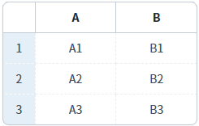
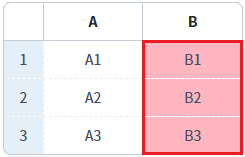
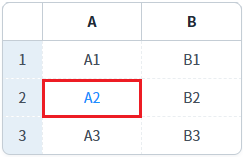
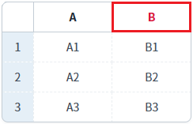

GridView의 메소드를 사용하여 바디 컬럼과 바디 셀, 헤더 셀의 스타일을 설정하는 예제입니다.
예제에서 사용한 메소드는 다음과 같습니다.
setColumnStyle: 바디 컬럼의 스타일을 설정합니다.
setCellStyle: 바디 셀의 스타일을 설정합니다.
setHeaderStyle : 헤더 셀의 스타일을 설정합니다.
보통 Style을 직접 제어하는 것 보다는 CSS파일에 Class를 정의하여 설정하는 방식으로 사용합니다.
(설정한 Style의 초기화가 용이하지 않습니다.)
다음은 Class를 설정하는 주요 메소드 목록입니다.
- setColumnClass
- setCellClass
- setHeaderClass
스크립트로 바디 컬럼의 스타일 설정하기
스크립트로 바디 셀의 스타일 설정하기
스크립트로 헤더 셀의 스타일 설정하기
1
STEP 1: 초기 상태를 확인합니다.
스타일이 설정되지 않은 GridView가 구성되어 있습니다.
Image 1.브라우저(Chrome) 실행 예시

2
STEP 2: 스크립트로 바디 컬럼의 스타일을 설정합니다.
"바디 컬럼 'B'의 배경색을 '#FFB6C1'으로 변경하기" 버튼을 클릭합니다.3
STEP 3: 실행된 결과를 확인합니다.
GridView의 바디 컬럼 'B'의 배경색이 '#FFB6C1'(분홍색 계열)으로 변경됩니다.
Image 2.브라우저(Chrome) 실행 예시

1
STEP 1: 초기 상태를 확인합니다.
스타일이 설정되지 않은 GridView가 구성되어 있습니다.
Image 3.브라우저(Chrome) 실행 예시
2
STEP 2: 스크립트로 바디 셀의 스타일을 설정합니다.
"바디 컬럼 'A'의 두 번째 셀의 글자색을 '#1E90FF'로 변경하기" 버튼을 클릭합니다.3
STEP 3: 실행된 결과를 확인합니다.
GridView의 바디 컬럼 'A'의 두 번째 셀의 글자색이 '#1E90FF'(파란색 계열)으로 변경됩니다.
Image 4.브라우저(Chrome) 실행 예시

1
STEP 1: 초기 상태를 확인합니다.
스타일이 설정되지 않은 GridView가 구성되어 있습니다.
Image 5.브라우저(Chrome) 실행 예시
2
STEP 2: 스크립트로 헤더 셀의 스타일을 설정합니다.
"헤더 컬럼 'B'의 글자색을 '#DC143C'으로 변경하기" 버튼을 클릭합니다.3
STEP 3: 실행된 결과를 확인합니다.
GridView의 헤더 컬럼 'B'의 글자색이 '#DC143C'(붉은색 계열)으로 변경됩니다.
Image 6.브라우저(Chrome) 실행 예시

GridView의 'setColumnStyle' 메소드를 사용하여 스크립트를 작성합니다. 세부 설정은 아래의 스크립트 예시에 작성되어 있습니다.
Example 1.Script
//예제 파일에서는 스크립트 scwin.btn_exam1_1_onclick에 작성되어 있습니다. // GridView 'grd_exam'의 바디 컬럼 ID가 'col_b'인 컬럼의 배경색을 '#FFB6C1'으로 지정합니다. grd_exam.setColumnStyle("col_b", "background-color", "#FFB6C1");
GridView의 'setCellStyle' 메소드를 사용하여 스크립트를 작성합니다. 세부 설정은 아래의 스크립트 예시에 작성되어 있습니다.
Example 2.Script
//예제 파일에서는 스크립트 scwin.btn_exam1_2_onclick에 작성되어 있습니다. // GridView 'grd_exam'의 바디 컬럼 ID가 'col_a'인 컬럼의 두 번째 셀의 글자색을 '#FFB6C1'으로 지정합니다. grd_exam.setCellStyle(1, "col_a", "color", "#1E90FF");
GridView의 'setHeaderStyle' 메소드를 사용하여 스크립트를 작성합니다. 세부 설정은 아래의 스크립트 예시에 작성되어 있습니다.
Example 3.Script
//예제 파일에서는 스크립트 scwin.btn_exam1_3_onclick에 작성되어 있습니다. // GridView 'grd_exam'의 헤더 컬럼 ID가 'h_col_b'인 셀의 글자색을 '#DC143C'으로 지정합니다. grd_exam.setHeaderStyle("h_col_b", "color", "#DC143C");
setHeaderStyle( headerId , style , value )
setColumnStyle (colIndex, styleName, styleValue)
setCellStyle (rowIndex, colIndex, styleName, styleValue)
setColumnClass( colIndex , className )
setCellClass( rowIndex , colIndex , className )
setHeaderClass( headerId , className )
removeColumnClass( colIndex )
removeCellClass( rowIndex , colIndex )
removeHeaderClass( headerId , className )